Maquette
Contents
6. Maquette#
Dans cette section, nous présentons un extrait de la maquette réalisée à l’été 2021 pour l’interface de l’infrastructure Candyce. Cette maquette ne représente pas l’apparence finale de Candyce mais a été réalisée pour affiner et mieux communiquer l’articulation générale des concepts sous-jacents à l’infrastructure d’un point de vue utilisateur.
Les parcours des utilisateurs de la plateforme pourront être très différents selon qu’il s’agit, par exemple :
d’un étudiant du secondaire, accédant directement à un contenu depuis l’ENT avec un simple lien, avec une interface simplifiée (type « retrolab » ou JupyterLab en mode « document unique »),
d’un professeur du secondaire, utilisant la plateforme pour créer de nouvelles ressources pédagogiques,
d’un professeur du supérieur, requérant des outils spécifiques dans son environnement Conda, etc.
Ce document ne présente qu’une partie de la maquette visuelle réalisée, qui détaille les différents parcours utilisateurs de façon plus détaillée que ce document.
Carnet#
L’interface « simplifiée » ou « document unique » de JupyterLab – affichant le document courant en pleine page – sera l’interface par défaut d’un étudiant se connectant à un contenu depuis l’ENT.
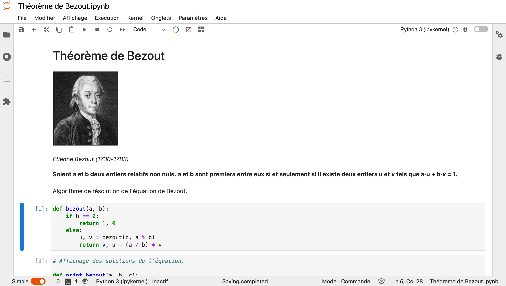
Gestion des projets#
Page principale de gestion de projet
Un enseignant s’authentifiant sur la plateforme pour créer du contenu pédagogique (via un SSO Educonnect ou depuis un ENT) se trouvera devant une interface permettant de créer un nouveau « projet ».
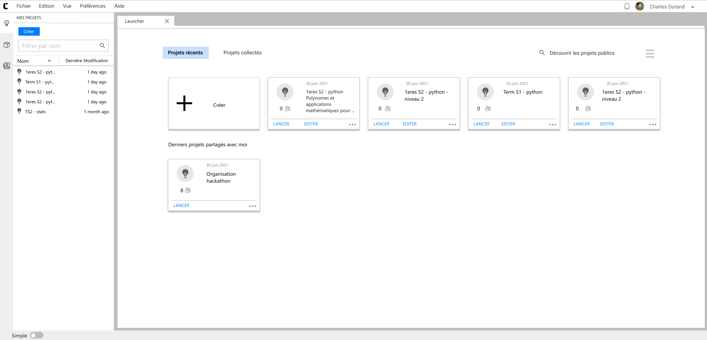
Un utilisateur familier de JupyterLab reconnaîtra la mise en page de l’application mais avec un contenu différent.
Les onglets sur le côté gauche permettent de choisir une interface de gestion :
des projets (contenu et ressource pédagogique),
des environnements logiciels,
des contacts.
Création d’un nouveau projet
Un projet est constitué de :
une arborescence de fichiers (textes, images, carnets);
un environnement d’exécution, à choisir parmi les environnements disponibles.
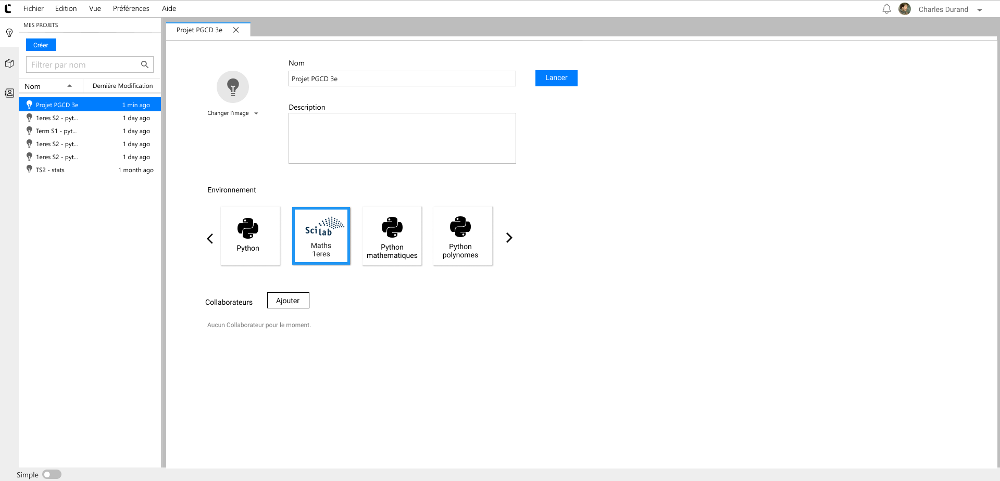
L’éditeur de projet permet de choisir un nom, une description, une image, un environnement logiciel dans la liste des environnements disponibles, et d’y inviter des collaborateurs.
Une image peut être associée à un projet pour le retrouver plus facilement.
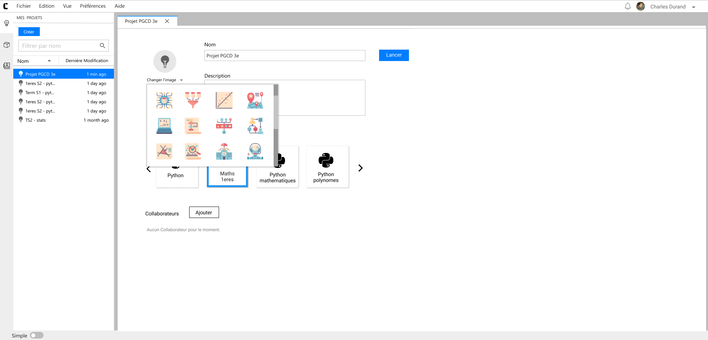
Choix d’un environnement parmi les environnements disponibles
L’enseignant peut choisir un environnement parmi ceux qui sont proposés sur la plateforme et ceux qu’il aura créés avec le gestionnaire d’environnement.
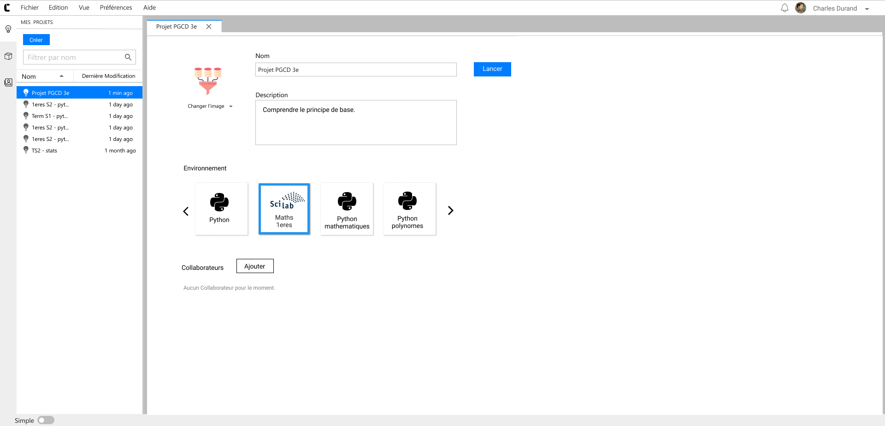
Ajout de collaborateurs pour l’édition collaborative parmi les contacts et groupes de contacts
Une fois le projet créé, des collaborateurs (au sens de l’édition collaborative) peuvent être ajoutés nominativement, ou par groupe. Les groupes de contacts peuvent être créés et gérés dans l’onglet « contacts »; cela incluera des groupes créés automatiquement à partir de l’information de composition des classes de l’ENT.
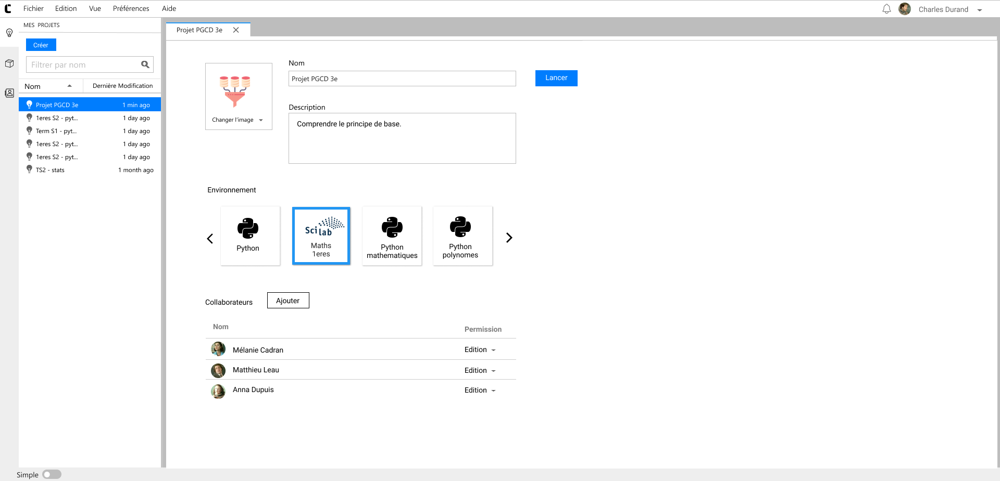
Gestion des environnements#
Page principale de gestion des environnements
En choisissant l’onglet « environnements » dans le panneau latéral, on peut voir les différents environnements disponibles et créer un nouvel environnement.
Un bouton « Créer » est aussi proposé pour permettre d’installer des paquets personnalisés.
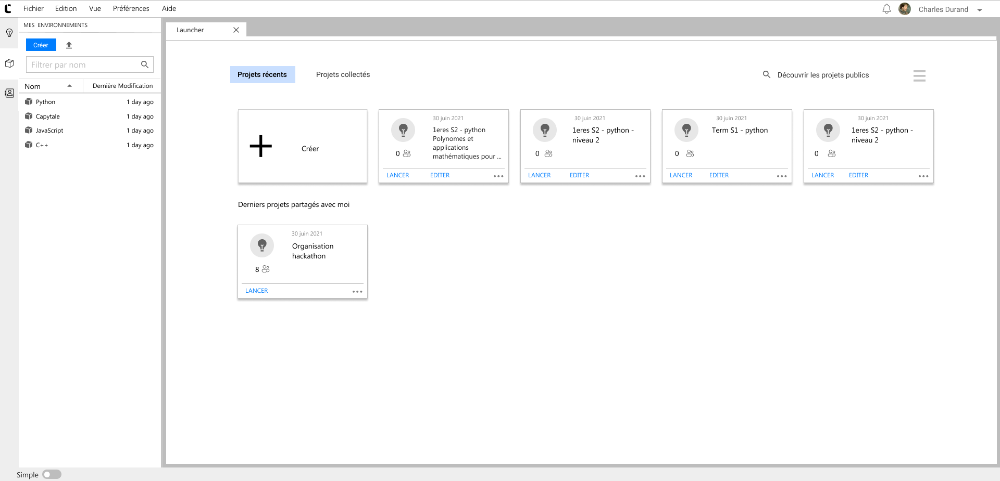
Création d’un nouvel environnement
Le bouton « Créer » ouvre un éditeur d’environnement (qui peut aussi être utilisé pour éditer un environnement existant).
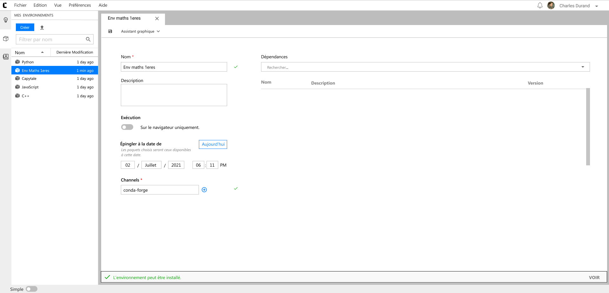
L’interface permet de sélectionner les paquets logiciels et de choisir entre un environnement « côté serveur » (exécuté dans un conteneur sur le serveur) ou « côté navigateur » (en WebAssembly, utilisant JupyterLite). Comme mentionné précédemment, un nombre moins important de paquets seront disponibles en mode JupyterLite.
Fournir les paquets logiciels WebAssembly sous la forme de paquets conda permettra d’offrir une expérience homogène entre les deux types d’environnement, et de rendre le passage de l’un à l’autre transparent pour l’utilisateur.
Choix de paquets logiciels avec auto-complétion
L’outil de gestion de la liste des paquets offre des fonctionnalités d’auto-complétion sur la base des paquets disponibles.
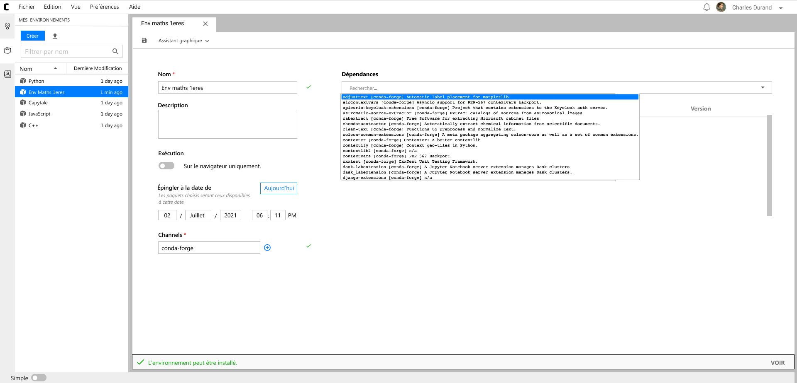
Cas d’erreur dans la résolution des versions
Si un ensemble de paquets aux versions incompatibles est sélectionné, l’utilisateur en est informé dans une barre d’état extensible.
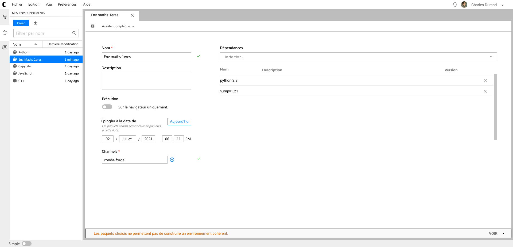
Les conflits peuvent être détaillés en bas de page. % Nous ne devrions pas mentionnés comment l’information sera présentée uniquement quelle information (càd rester au niveau fonctionnel)
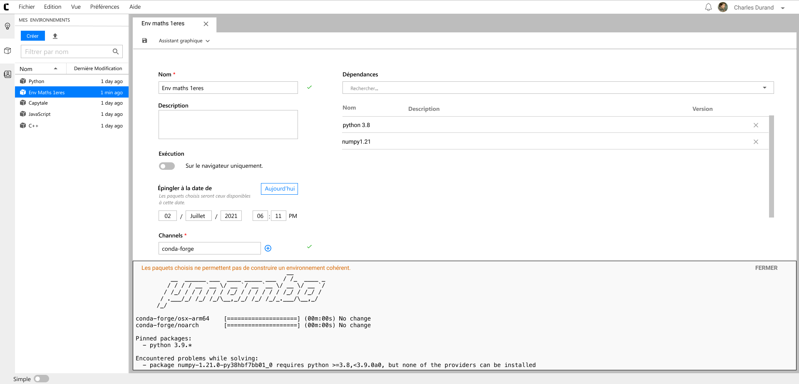
En cas de succès, l’utilisateur en est aussi informé dans la barre d’état.
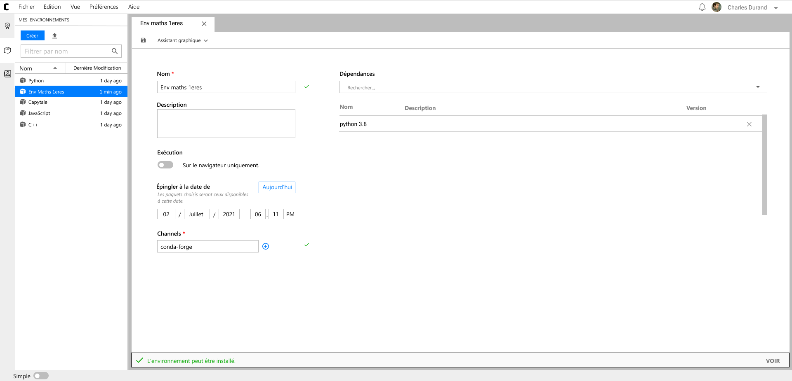
Dans ce cas, la liste exhaustive des paquets installés dans l’environnement est détaillée en pied de page (incluant les dépendances de second ordre).
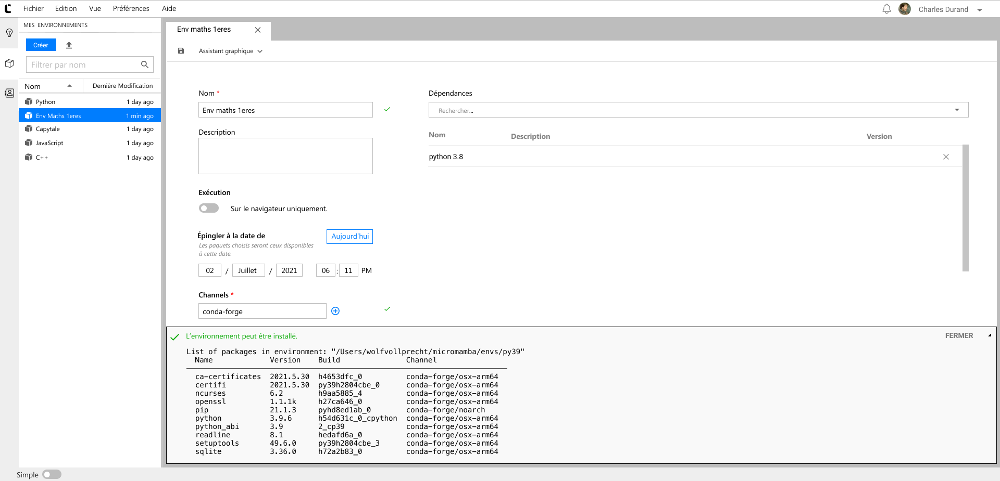
Interface Jupyter dans un projet#
Une fois créé dans l’interface principale de Candyce, un projet peut être lancé et l’utilisateur avancé est dirigé vers une interface Jupyter, augmentée d’un panneau indiquant quels utilisateurs sont des collaborateurs du projet et s’ils sont connectés.
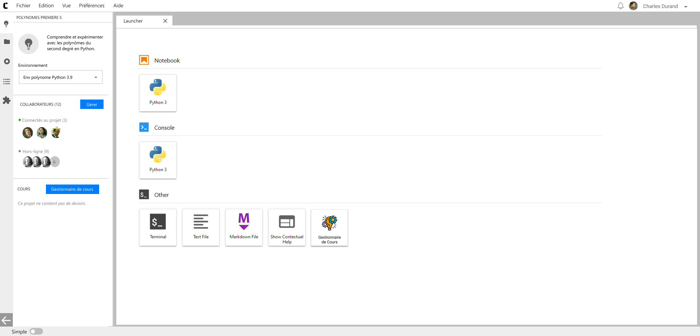
Création d’un cours ou devoir dans un projet
L’interface de JupyterLab est aussi complétée d’un outil de gestion des cours et devoirs (soumission, correction automatique « à la nbgrader »).
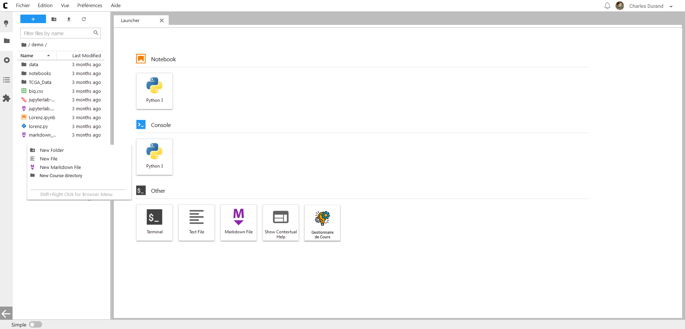
Une icône vers le gestionnaire de devoirs est aussi accessible dans le lanceur.
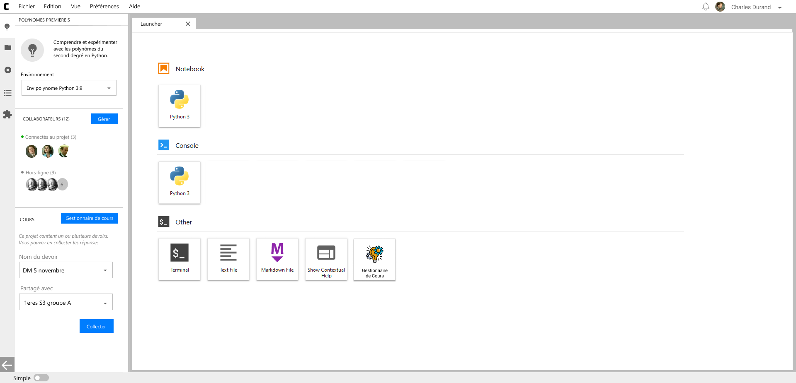
Gestion des devoirs#
Dans l’arborescence d’un projet, l’enseignant peut créer plusieurs contenus pédagogiques, de type « polycopié » (ne faisant pas l’objet d’une évaluation) ou « devoir » (faisant l’objet d’une évaluation, potentiellement automatique avec un outil similaire à nbgrader).
Ajout de destinataires à un polycopié.
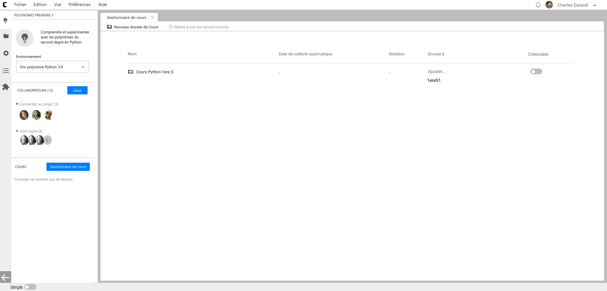
Création d’un nouveau devoir à rendre.
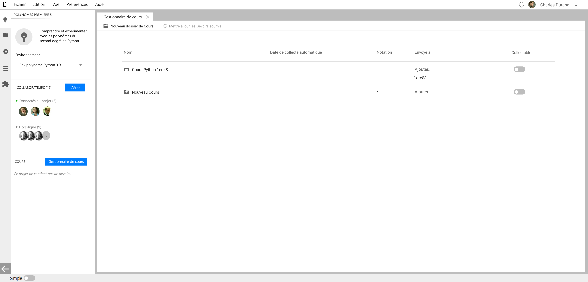
Changement de la date de remise du devoir.
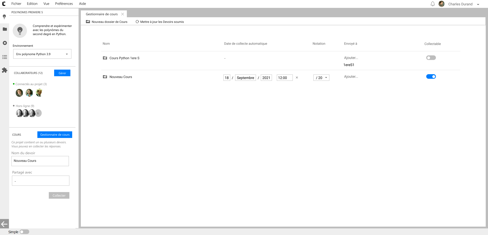
Soumission du même contenu à plusieurs groupes d’élèves.
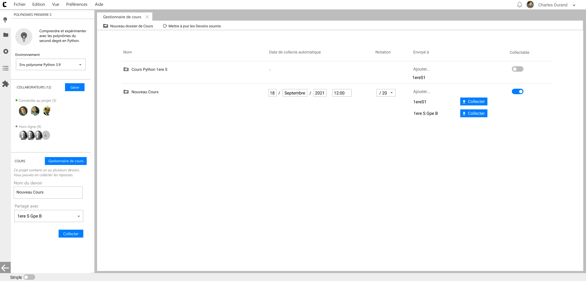
Remarques:
Du point de vue de l’élève, un contenu envoyé par un enseignant prend la forme d’un nouveau projet dans son espace.
Par défaut, l’enseignant est ajouté comme collaborateur au sens de l’édition collaborative aux projets qu’il a envoyés aux étudiants, de sorte qu’il puisse aider les étudiants dans leur travail.
Ces fonctionnalités d’envoi de devoirs - si elles ne font pas partie du parcours utilisateur typique d’un étudiant - ne lui seront pas cachées. Le parcours typique d’un étudiant sera l’accès direct au contenu depuis son ENT.
En revanche, ce même étudiant se connectant à la plateforme Candyce pourra, au même titre qu’un enseignant, créer des projets et des environnements pour lui-même et les partager avec d’autres utilisateurs de la plateforme.
Nbgrader
Nbgrader est un outil d’évaluation automatiques de carnets, développé initialement pour les besoins de UC Berkeley relatifs à l’utilisation de carnets pour l’enseignement à de grands groupes d’élèves.
Nbgrader permet de créer des « carnets à trous » où l’élève :
doit implémenter lui-même une part de la logique du programme,
dispose de quelques tests simples pour vérifier son code,
mais n’a pas accès à l’ensemble des tests utilisés par l’enseignant pour la correction finale - évitant ainsi la manipulation du résultat.
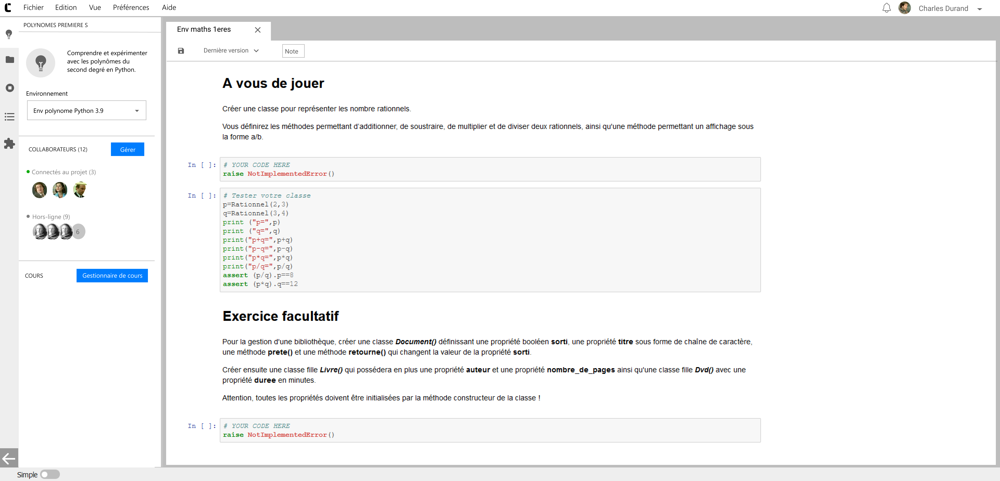
Candyce offrira des fonctionnalités très similaires, mais n’utilisera pas nécessairement la base de code actuelle de nbgrader.
Interfaces d’édition WYSIWYG#
Cellules de carnets#
Une extension à l’interface du carnet qui simplifiera son usage par les élèves du secondaire sera d’offrir la possibilité d’éditer les cellules de textes avec une interface visuelle WYSIWYG (What You See Is What You Get) plutôt que via la syntax Markdown.
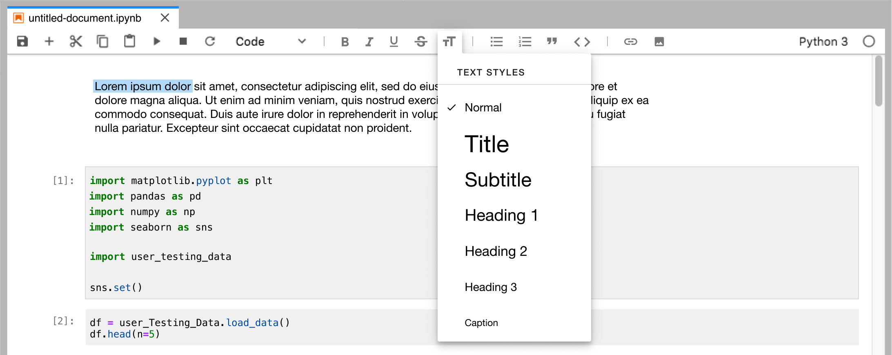
Un éditeur visuel pour les cellules de textes
Une solution envisagée est d’utiliser l’outil ProseMirror, qui peut être utilisé pour éditer du Markdown, et se prête bien à l’intégration aux fonctionnalités d’édition collaborative de Jupyter basées sur YJS.
Traitement de texte et tableau virtuel#
Au-delà des documents carnets, l’intégration à l’interface d’un outil de traitement de texte sera nécessaire. Des intégrations à Jupyter de Prosemirror et Tiptap ont déjà été effectuées. Pour cette fonctionalité, Candyce pourrait aussi se tourner vers OnlyOffice.
Dans un contexte d’enseignement mixte présentiel / distanciel, un outil de « tableau blanc » virtuel permettant l’édition collaborative sera intégrée à la plateforme.
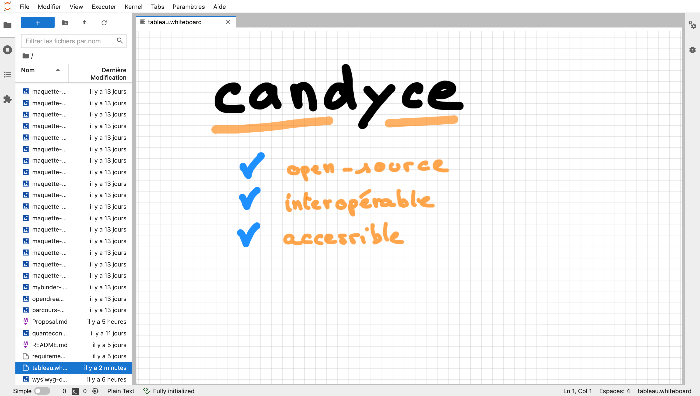
Un tableau blanc collaboratif intégré à l’interface de JupyterLab
Programmation par blocs#
Dans le cadre de l’expérimentation de la plateforme pour l’enseignement au collège, des intégrations d’outils de programmation par blocs est envisagée. Dans la maquette ci-dessous, une interface de carnet alternative est proposée, dans laquelle les cellules de code sont remplacées par des éditeurs visuels pour la programmation par bloc.
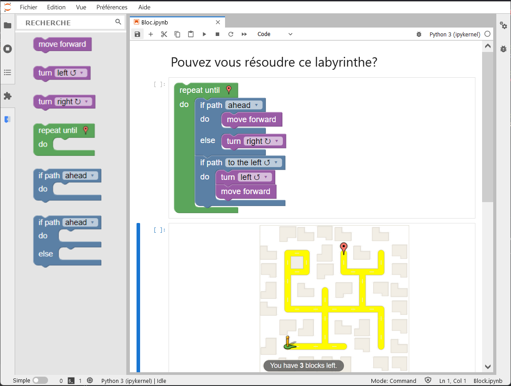
Une maquette d’un éditeur de programme blockly intégré dans le carnet au lieu des cellules de code